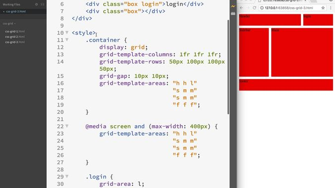

Putting Your Content in a Grid Container
Before we can define a grid in CSS, we need to nest all of the content inside an id that we will attach to a div. Although we could apply these settings directly to the body, we'd limit our flexibility for changing layout down the line - all of our content would be forced to exist inside our CSS grid, whether we wanted it to or not. To avoid that situation, by default we will contain all of our grid content in a div with an id name of grid.
The Display Property
In CSS, we default to displaying content in boxes. To change that, we'll invoke the display: grid; property to tell the browser that instead of stacking HTML boxes in flow sequence, we're going to place each Box Model element on a defined screen grid. This gives us tremendous control over Web page layout. That used to be more relevant a few years ago when it was still common to see complex layouts, but even in the mobile-first era of Web design we can make good use of CSS Grid.

Grid Template Code
It is a bit hard to make out in the screen capture below, but the Web developer in this case has five HTML sections being organized:
- Header
- Login
- Section
- Main
- Footer
If you study the code and compare it against the image, you should be able to see how the developer has set up three columns and four rows and used aliases to refer to the five HTML sections by a single letter each: h, l, s, m, and f. The only alias you get to see being set up in the image is the one for the Login section, where grid-area: l assigns the letter "l" to the "login" class name.
